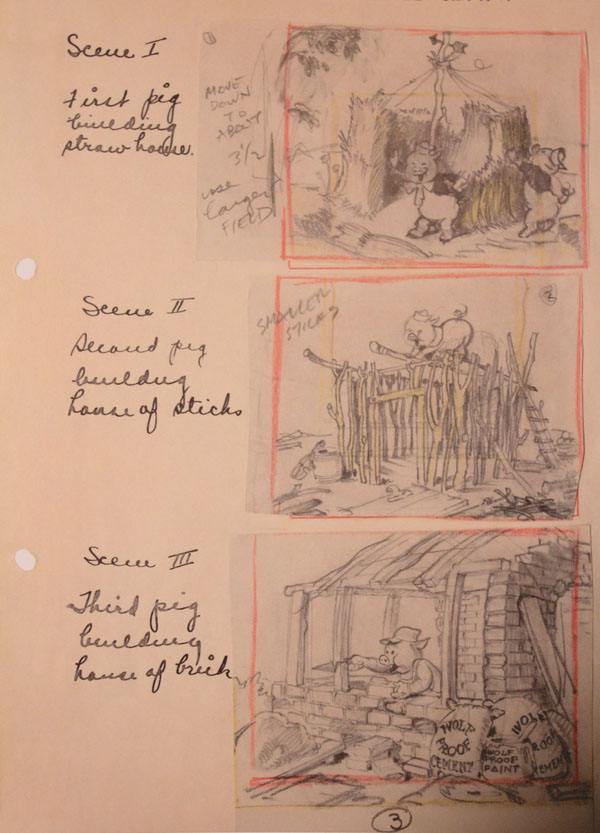
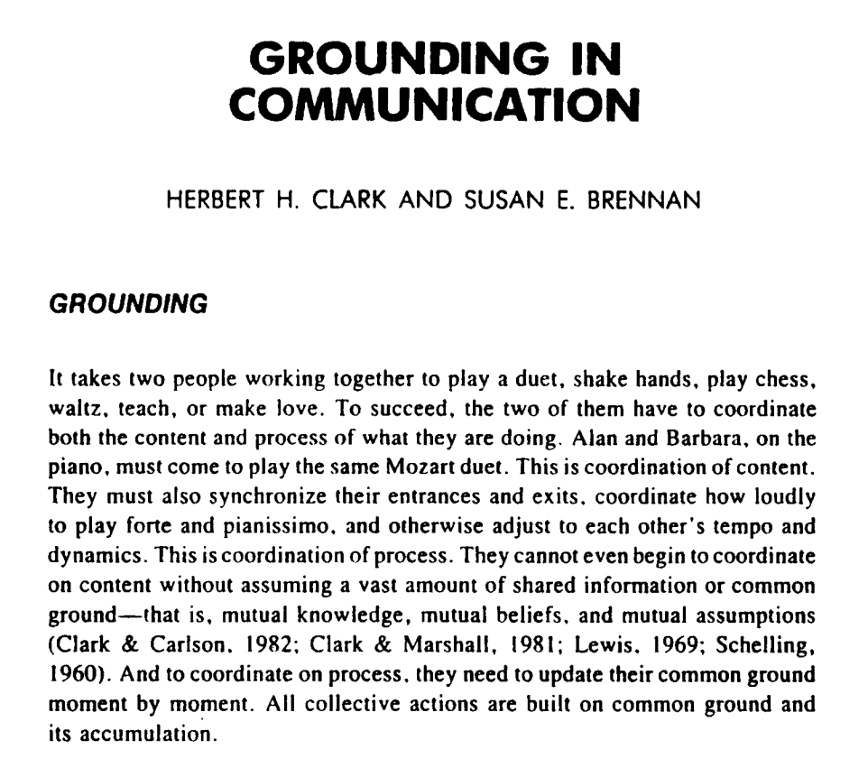

Three Little Pigs, 1933. Animated short film produced by Walt Disney.



A storyboard…
- organizes story into semantic units
- creates a shared reference
- enables easy iteration

User’s Intent
Show the lyrics on the screen naturally within the scene.
Spatially — find optimal placement


Not occluding important subject
Efgd = s̄fgd ⊗ k

Close to natural attention
Efcs = ‖pcenter − p‖²

Contrast with background
Ecnt = c(p)

Consistent across phrases
Eprv = ‖pprev − p‖²
Find optimal placement by minimizing total energy
pmin = arg minp ( wfgd·Efgd + wfcs·Efcs + wcnt·Ecnt + wprv·Eprv )
People communicate by establishing common ground


The problem with live stream interaction

- Visual references are awkward in text chat.
- Latency disrupts the communication.
- Streamers must split attention between performing and reading chat.
What about visual input from viewers?

johnr0.github.io/publications/VisPoll_CHI2021
How can we support flexible and scalable viewer visual input?
Streamers specify visual attribute constraints
Live stream

Attribute constraints
Viewer input

Clustered by rotation & size
 ×50
×20
×10
×50
×20
×10
Aggregated visualization
Width of arrow ∝ input count

Application scenarios

Application scenarios

Walter Murch's thought experiment
“What if there were a machine—a ‘black box’—that could connect directly to a director’s brain and translate their intentions instantly into a finished film?”
Walter Murch, In the Blink of an Eye

Intermediate artifacts
Video editing workflows involve multiple stages and intermediate artifacts.
Workflow
Stages

Asset
Collection

Narrative
Development

Scene
Planning

Pacing
Adjustment
Intermediate
Artifacts
Compositional
Structures

Freeform Canvas

Linear Text Editor

Grid-Based Planner

Timeline Editor
Intermediate artifacts encode semantic structures of its elements.
Video Origami


Canvas
Editor
Storyboard
Timeline
Supporting Orientation Across Parallel Branches
When AI makes it cheap to generate many variations, the fundamental challenge shifts from creation to orientation.

The original repo is more of a seed, from which could sprout commits on all kinds of different research directions. What does version control look like when branching is the norm, not the exception?
VideoDiff: Comparing video versions is hard

Huh et al. · VideoDiff · CHI 2025
Key challenge: Comparing differences between versions is especially hard for time-based, multimodal media. How do we help users make sense of many branches created with AI assistance?